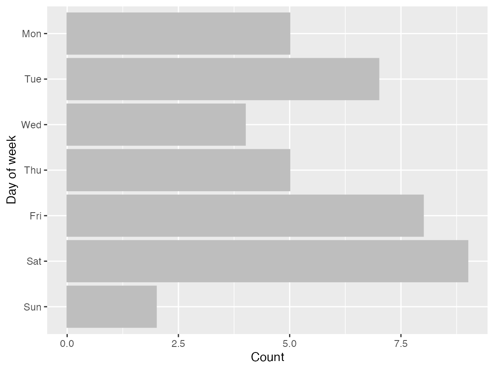

Detecting data fabrication with kpitools
fabrication.RmdBeside the KPI aspect, kpitools also provides a few tools for detecting data fabrication.
library(kpitools)Day of week
In clinical trials, it may be odd for randomizations and visits to occur at the weekend. This depends on the local customs of course, and the trial itself. For example, it might be reasonable to expect a trial in an emergency department to recruit at the weekend, while a trial in a department that does not schedule appointments would not. As such, depicting the day of week that participants have visits may be useful.
To demonstrate, we generate some data, where x might be a randomization date or a visit date or similar.
set.seed(234)
dat <- data.frame(
date = lubridate::ymd("2020-05-01") + sample(-20:20, 40, TRUE),
datetime = lubridate::ymd_h("2020-05-01 14") + 60^2*sample(0:20, 40, TRUE),
by = c(rep("Site 1", 10), rep("Site 2", 30))
)
dat %>% fab_dow("date")
As with the KPI functions, the fabrication functions also allow for stratification by given variables. By default, a faceted plot is returned, using the same scale for each subplot.
dat %>% fab_dow("date", "by")
We can use plot-specific scales either via the scales option:
dat %>% fab_dow("date", "by", scales = "free_x")or by returning a list of plots, to which themes or other modifications could be applied and then be wrapped with e.g. patchwork:
dat %>% fab_dow("date", "by", output = "list") %>%
purrr::map2(.y = names(.), ~ .x + ggtitle(.y) + theme_kpitools()) %>%
patchwork::wrap_plots()
(modifications can be made regardless of the output type)
Time of day
Similarly, we may also be surprised if visits (or randomizations or …) occur at night.
dat %>% fab_tod("datetime")Again, specification of a by variable gives the values per level of the by variable. By default, this returns a list of objects, which could be wrapped using e.g. the patchwork package.
dat %>% fab_tod("datetime", "by") %>%
patchwork::wrap_plots()Plots can also be faceted, with the disadvantage that all axes are then on the same scale.
dat %>% fab_tod("datetime", "by", output = "facet")